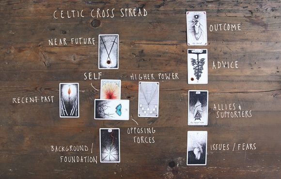

Welcome :)
Here’s How to Read Tarot:
- Take a few deep breaths holding your deck in your hands and meditate on sharpening your intuition and connecting with the cards
- Shuffle your deck while asking your question in your head and meditate on inviting the card that is best suited to come through
- You can either stop when you feel ready, count to a number, cut the deck, or feel it out for which card is raising it’s cosmic hand to answer you (sometimes they even jump out!!)
- If the card is upright, there is believed to be one interpretation, and if the card is reversed, or upside down, there is an opposite interpretation, usually to inspire growth and a shift.
Not all tarot readers will read with the reversed meaning, so this is also up to you
Tarot is a mirror and, as humans, we don’t always like what we see staring back at us,
but it is in our acceptance where we find freedom.

How to Strengthen Your Connection to Your Tarot Deck:
- Daily One-Card Pull
With this method you will form the habit of connecting a card with your current state and how that reflects your life in the moment.
- Past, Present, Future Spread
Easily the most common spread. You can also use this spread to clear emotional blockages from the past, gain insight into where you currently are in life, and where this path will lead you.
- Love, Career, Health
If you’re looking for an overview of the three major pillars of your life, the love, career, health spread provides the ultimate insight. Do you like what you see? If not, what changes are you willing to make?
click here to get back to the home page
click here to go to the
top
click here to go to the next page.
click here to go to the previous page.